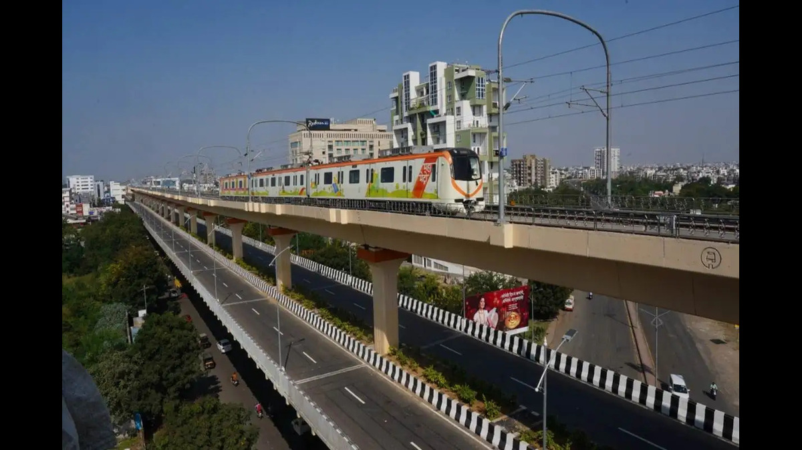

Metro Project
Nagpur Metro System Integration
Role: Commissioning Engineer & Project Coordinator Project:-
Nagpur Metro 6.7 MVAR SVG Network Compensation Project Scope & Leadership: Directed site operations, aligned cross-functional teams, and spearheaded the end-to-end commissioning of a 6.7 MVAR (9.5 kA) Static VAR Generator (SVG) system to deliver dynamic reactive power compensation for traction load networks.

Technical Execution & Field Engineering:-
- Site Coordination: Managed project milestones and execution schedules across multiple 132 kV Receiving Substations (RSS) and 33 kV Traction Substations (TSS), ensuring seamless master/slave network coordination
- Signal Integration, Communication & System Diagnostics: Executed the direct integration of Current Transformer (CT) and Potential Transformer (PT) feedback systems into the SVG compensation panels across all 132 kV RSS, 33 kV TSS, and ASS locations. Successfully diagnosed and resolved complex signal discrepancies, guaranteeing high-fidelity telemetry and precision network load monitoring.
- SCADA & Telemetry: Integrated network compensation controls through RTU/SCADA communication interfaces utilizing the IEC 104 protocol. Troubleshot and rectified interface bottlenecks to guarantee uninterrupted data flow to the central control station.
Key Achievements & Impact:-
Power Factor Optimization: Successfully elevated and stabilized the overarching network Power Factor (PF) from a baseline of < 0.96 to a sustained 0.98–0.998 under dynamic operational phases.
Operational Reliability: Delivered a fully synchronized and fault-tolerant compensation network, finalizing project handover with verifiable improvements to power quality across the metropolitan traction grid.
Centralized network mode compensation Integration: Achieved seamless telemetry synchronization with the central control room by configuring and troubleshooting the IEC 104 protocol, establishing a robust foundation for remote monitoring and real-time reactive power management.
back